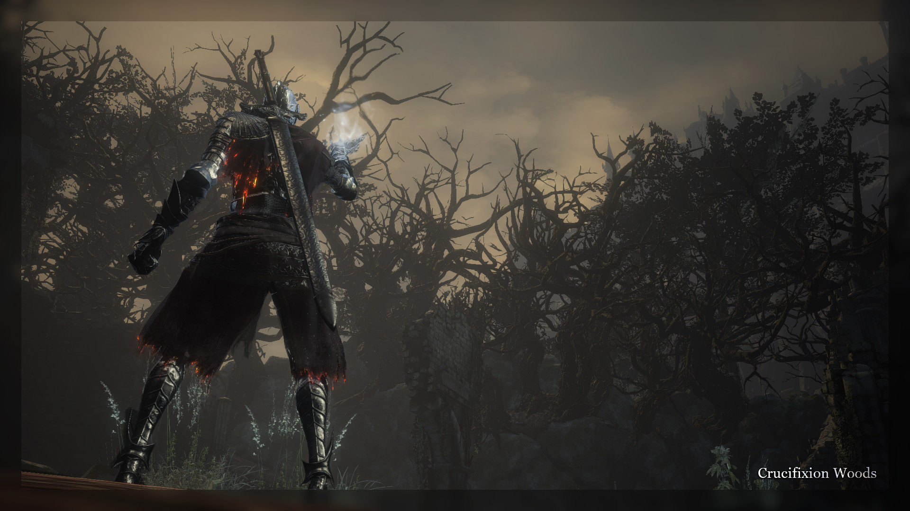

May 11–12, 2018
The Puppeteer was punctual. Friday the 11 of May, the event was to begin at 4PM GMT. An hour earlier, the Puppeteer had begun the countdown, reminding us of the impending culmination with numbers such as “60”, “50”, “40”. Most, of course, were already seeping with excitement and anticipation, and the countdown only fanned the flames.
As the clock struck 3:50PM, #132 revealed the name of the last marionette: the Puppet. As simple as could be, yet a fitting complement to the Puppeteer.
The Father did all he could, the rest of the story lay in the Puppet’s cold hands—and in ours. With the sole purpose of overpowering the tyrannic Sin, it has set out the long and arduous journey.
At last, the countdown hit zero. The event has begun. And with it we were sent a peculiar link: “https://www.twitch.tv/puppeteermusicbox”. A stream? That couldn’t be it, could it? No, it wasn’t a stream, but rather an augmentation for the event. It was a “music box”, which would begin to play music during critical parts of the event. But not only that—the Puppeteer has prepared several dozens of wallpaper-like images to show throughout the event which would give us current status of the Puppet’s journey. Avoiding premature spoilers, the original uncompressed album from the Puppeteer himself will be linked at the very end of this story. For now, we will include images as they become relevant.
The very first image, which would become a “stand-by” as things were being set up, was this:
On its blurred background we can vaguely see the Puppet itself, lighting a bonfire.
Shocked by the twitch link and not yet knowing what it would be for, we weren’t expecting yet another thing. The event was not merely invasions or a red sign summoning like any of the ones we’ve seen before. Instead—a Dried Finger run.
The preparations were deemed complete, and the event began. Twitch stream changed from the logo an image of the Puppet, rising up from the ground with naught but an old, broken sword in its hands.
In tandem with the image, #133 told of the Puppet unsteadily finding its way through the High Wall. The Father, despite no longer being involved with his creation, left some weaponry near the beginning of its journey for it “to find and use as told”. Why not give them to it from the beginning? Perhaps so it receives them after becoming more proficient at movement—its synthetic birth happened mere days ago, after all.
Out of our eager Red Eye Orb-cracking mass, Fanboy was the very first one to encounter the Puppet.
The thing was found at the very beginning of the High Wall, in the small room with the vessel. As became apparent, the Puppet was very much unlike any other ones we have faced before. Its health pool was stunningly huge—two or three times that of Lord of Hail (estimated at at least 2,000). But it came with a counter-balance - the Puppet neither healed nor accepted any healing items dropped by us.
Caught by a clutch swing, Fanboy fell just short of killing the Puppet. Simultaneously, the Puppeteer sent us a message:
—1—
Kill count for the event. As more and more of us were butchered, we would begin speculating—was the Puppet growing stronger, feeding on our souls?
In the first few battles we realized that its broken straight sword wasn’t completely normal. It had the moveset and the damage of the regular one, but its weapon art had an unprecedented amounts of poise—even allowing for trades with heavy weapons.
Along with the rubbish blade, the Puppet was heavily reliant on regular, rustic consumables: firebombs, undead hunter charms, and throwing knives. The charms in particular were used aggressively, especially during the times the Puppet’s opponents were retreating and healing. The synthetic thing was unlike the Father’s previous marionettes—it was not merciful in its advances, seeking just to kill any immediate opponent with its under-powered arsenal.
(Some of our recorders, Fanboy in particular, decided to throw some music over their videos. Enjoy)
Despite our best efforts to stagnate it, the Puppet has made its way throw the High Wall, down to its boss, Vordt. Here, we have glimpsed the first critical point of the event.
#134 clearly instructed us to put red signs by the boss fog. The Puppet (with kill count currently at 6) was thirsting for our souls more and more. And to sate it, it would wait for us at the end of each areas, as nothing short of a boss.
As we inscribed our red signs, one by one we were pulled into the Puppet’s world. Via a backstab teleport, it would transport us to its boss arena: the open area behind the High Wall’s gates. And, every time one of us would challenge the Puppet, the Music Box would begin playing this area’s boss theme. (The full list was also provided by the Puppeteer after the event, it will be linked along with the album of Twitch graphics.)
(Annotation: each boss fight which was recorded will include a version with the Puppeter’s authentic boss music overlaid on top of the footage. Because Fanboy’s and Kallah’s clips already have music in them, and neither had saved the original footage, the game audio will not be always be present. The original clips with the music of their choice can be found in the Video section below the write-up)
In Vordt’s chamber, or somewhere near it, the Puppet had found first of the two gifts the Father had left (#132). As some of us have realized quickly—and as confirmed in #135 —the gift was the Drakeblood Greatsword, previously wielded by none other than Oden, Lord of Hail. Faithful to the “stormborn” description, it had Storm Ruler’s effects on its stance.
More curiously, the latter half of the poem hints at the Puppet already knowing this weapon. The artificial thing was born of two opposite souls merged and stitched into the Heart of Spear’s corpse. One possible explanation would be that the Puppet’s eyes were those of the Heart, which many eons ago was subdued by Oden, titan Lord of Thunder.
As most of us challenged the Puppet (and Jean fell off a cliff during his attempt), the Puppeteer responded to some technical difficulties with the following image (likely referring to not seeing any more red signs?)
Shortly afterward, message saying “1 LEFT” let us know that the boss fight was nearing the conclusion. After Fanboy was defeated, the High Wall was completed. #136 let us know that the thing’s thirst was temporarily quenched, and it was to press on on its journey, invigorated and stronger than before.
—11—
The Puppet ventured on through the putrid settlement, Oden’s stormborn greatsword completely replacing the broken straight sword. It was now obviously growing stronger, consuming a Fading Soul consumable each time it killed one of us. With some degree of excitement a couple of people thought about just how powerful it would become by the end of the event.
Curiously enough, as per Fanboy’s record of the event (to whom many thanks go, as he diligently kept updated during this whole finale), the Puppet’s firebombs began to combine the effects of Black Firebombs and Lighting Urns. There’s no footage of it, so this is possible but not confirmed. Also, it had obtained a weak regeneration effect, seen as the golden glow around its torso (perhaps a regen effect from a talisman?)
As the thing reached the bonfire on the dilapidated bridge, the Father shared with us the details of the second gift he left for his precious marionette. #137 spoke of the “cross” with which the Cursed Greatwood’s bark was stricken. There could of course only be one thing fitting the description of a “cross” which the “heart mended” surely would remember. The very occult spear which had stricken Heart of Spears centuries ago—now, fit to be the weapon of the Hearts corpse. In death, on its journey to butcher the manifestation of the gods it followed in life.
As the Puppet was nearing the Greatwood, two invaders could get in its world at once. This was usually not in favor of the synthetic thing, but it persevered, as it inevitably had to.
Its kills amounting to 17, #138 let us know that the next boss fight was incoming. The Puppet had found the occult spear, the heart beating within its ribcage surely having some sort of a recollection of the weapon. Now, it was ready to test it on us.
To the wails of the music right from Dark Souls III’s unused content, we were to challenge the soul-hungry Puppet once more. As confirmed by this boss’ twitch image, it indeed obtained Arstor’s Spear, previously stuck in Heart of Spears’ chest.
The spear, heavily modified, was equipped with two custom weapon arts: Neck Swipe characteristic of schythes, and Spin Slash like that of the Partizan. The Neck Swipe in particular did horrifying amounts of damage, erasing close to half a health bar if it landed.
Sitting in the voice chat during the event, both Narcolept and Fanboy have began speculating that the Puppet’s animations may have been tweaked ever so slightly. The speed at which the thing could close the distance between it and its opponent was intimidatingly unnatural.
Yet another detail which Narcolept has remarked was that the Puppet was completely mute. Upon dying, a normal character produces some sort of a scream. The synthetic thing, however, just fell to the floor in complete silence—certainly adding to the atmosphere.
Some of us challenged the Puppet successfully, some not so much—but the time for this boss fight was coming to an end. With #139, just one more person could try their luck and skills.
In the very same poem, Father began wondering—now just witness to his creation’s journey—what could it possibly be thinking? An amalgamation of numerous beings broken, stitched, torn apart and purified in grotesque ways—all for a single goal with a solemn fate afterwards. Yet it was living, breathing. And now, on its journey, it saw nothing but endless waves of foes rising up against it, only to fall and feed it more and more scraps of their souls. Truly, a “bloodbath”.
—26—
The woods were passed quickly, both because the area did not offer much room and could only be invaded past the Halfway Fortress bonfire. Nevertheless, we have gotten poem #140 while the Pupppet was fighting through the interminable waves of invaders amidst the trees.
The poem gave a glimpse at just how strong the Great Old Sin (Soul of Cinders) was supposed to be within the Puppeteer’s story: having obtained proper arms, it was already a deadly opponent. Yet to the Sin, it was a mere “bug”.
Moreover, #140 gave us a glimpse at the upgrade the artificial thing would soon be receiving. Up until this point, the Puppet has been unable to heal itself aside from small passive regen. However it was generally only a matter of time before it succumbed to the damage we would gradually deal. It had to obtain some way of healing. This way would be precisely the “cruel brother to estus mug”.
The Puppet consumed more and more of our souls and, presumably, souls of every living enemy and boss it would com across in-game. As its headcount went up to 29, and we were done clearing the area out, #141 set us up for the next boss fight.
The twitch image for this boss continued the theme of the image for the area: the Puppet was consuming souls.
The Puppet did not gain any new weaponry, as during the previous encounters. The souls it consumed, however “congested” as per #141 into the golden consumable soul it could now use. Upon consuming it, the mute synthetic knight would burst up with potent regen not unlike the Lifegems of Dark Souls II. Invaders frequently play a war of attrition with their targets. With this addition to its arsenal, the Puppet could withstand drawn-out conflicts.
Sometimes, the artificial thing would welcome its challengers already damaged, showing what its Soul can do even before starting the fight. An sidenote observation: the Puppet never used the regen soul more than once during the encounter.
#142 forced us—and our unyielding target—to keep going forward, abandoning Crucifixion Woods. The last challenger was fought, the Puppet’s kill count set to 34. Abiding by Father’s word from the poem, its tireless pursuit of might would continue on, until at last it was string enough to challenge the Sin itself.
That is—after a 30-minute break, announced by #143. The Dried Finger run has been going on for four straight hours with no time to breathe. Certainly, the Puppeteer would want his public and himself be able to have a small breather.
—34—
Having slain the Crystal Sage and challenged us—invaders—to offer our souls to it in bloody combat, the Puppet had decided to tackle the Cathedral before venturing into the Farron Keep.
Under the crimson skies, #144 told us of a peculiar entity hanging in the air. Somewhere around the myriad graves heaped next to the Cathedral, a mirage of the “lone blackened spirit” stood. Upon reaching this place, the synthetic knight obtained two new items: the Dark Sword and the Dark Hand—a precursor to what would become one of the main themes of the event.
The Puppet sought the blackened spirit, hunted it, as told in #145. In so doing, the transient apparition grew stronger, awakening within mute knight’s amalgamation of a soul some distant, vague recollections. Recollections of a sole survivor of a legion washed away by the eons, forgotten like an old nightmare. Somewhere within the Puppet’s synthetic shell, Lone Darkwraith dwelt. Or, at least, some vague semblance of the puppet tied to the Cathedral of the Deep. It manifested itself as the Dark weaponry the Puppet had been using, but in nothing more.
We ventured deeper into the deep-stained cathedral, chasing after the mute knight now overcome with distant recollections. Marching on and consuming all the still-living residents of the cathedral, it succeeded in opening both of the shortcuts and, ultimately, coming to the Deacons of the Deep.
There, our last change to see the Puppet, before the Darkwraith’s colorul apparition completely overcame the blank void canvas that was the Puppet. #146 alarmed us of precisely that happening. Having successfully consumed the Deacons, the thing gave in to the memories growing ever stronger. And in quick sparkling of the next boss encounter, we would be able to challenge the image of the Lone Darkwraith in its full glory.
Darkwraith’s apparition was in full force, equipped with its own arsenal: Dark weaponry we saw before, as well as Ringed Knight Sword and Spear. Moreover, the fight took place not in the usual arena of the Deacons, but rather on top of Aldrich’s sarcophagus - a fairly narrow and flat arena.
The challengers were met with the Dark Sword paired with the Arstor’s Spear, which were only later on changed into the ringed knight gear. The Puppet had also began restraining itself in attacking people when they were in need of healing—probably because it was able to inflict heavy damage quickly, and the Puppeteer had thought it would not be fun for the participants if he kept playing non-stop aggression.
A lot of us challenged the Puppet’s Darkwraith image here, with the Pupppet overcoming many, and consuming ever more souls. At last, with the count of its fallen foes reaching 48, Lone Darkwraith’s recollections began to fade. Poem #147 made it clear—the apparition left the Puppet’s mind a black void just as it was before entering the Cathedral. A void slowly filling with uncontrollable hunger, as the knight engulfed more and more powerful beings.
—48—
Forced by the all-encompassing desire, the Puppet grabbed the Small Doll from the Deacons’ corpses and returned to Crucifixion Woods, ready to take on the gigantic putrid swamp in which lay the ruins of the Farron Keep.
Yet after the Cathedral, seldom would the mute knight be without a mirage guide on its way. The Farron Keep invoked another fuzzy recollection of a blood-crazed pyromancer, having had no teacher but the nature itself. The man, as per Father’s words in #148, had attacked the old man in horror, likely before succumbing to his strings and becoming a puppet himself.
Redflame Erik’s unstable shadow lay over the Puppet, manifesting itself in the off-hand Demon’s Scar coupled with Flame Fan pyromancy.
One by one, the three flames guarding the Abyss Watchers were snuffed out. The Puppet, apparently apathetic to status effects, went through the swamp in great haste, without using moss clumps whatsoever.
Upon reaching the Keep perimeter bonfire, the knight stalled, giving all of the remaining invaders a chance to fight it. After making up for the quickness of its journey through the deepest parts of the swamp, it pressed on.
Just as Darkwraith’s memory was growing ever more potent whilst its host traversed the Cathedral, Redflame Erik’s influence was becoming stronger, working its ways through the Puppet. #149, however, gave us a glimpse at what was truly happening within the mute shell we were chasing. The Puppet was overcome with mirages of marionettes previously residing in these areas. But, perhaps in a way similar to how it devoured souls, perhaps in an entirely different manner—it was devouring the images, feasting upon their experience and residual force.
Redflame Erik’s apparition, before the synthetic knight consumed it completely, was eager to challenge all of us who were still around. Thus, the area’s boss fight began.
Set to yet another track by Alex Roe (whose music would dominate the event, it seems the Puppeteer was quite fond of it), Redflame Erik’s recollection waited for us. The fights began with the Puppet hitting us at full-force with a Chaos Flamberge and a Chaos Hand Axe - default weapons favored by the insane pyromancer.
Advancing deeper into the fight, the flamberge would be changed to the Demon’s Scar, which moved from a mere off-hand to a main-hand weapon. The Puppet was extremely aggressive during the entire fight, with the constant pressure added from Fire Surge and Profaned Flame in tandem with everything already in its arsenal. If this was not enough, Dragonhead Shield would be brought up.
We have persevered through Erik’s challenge. As its apparition was consumed by the Puppet, it sought after its next prey—the Abyss Watchers. After #150 was sent, Fanboy successfully finished Erik’s apparition off.
The Abyss Watchers were a very important target for the Puppet. They were already once sacrificed to the First Flame, and, by extension, were a part of the Great Old Sin. The artificial knight was growing ever stronger in is journey,as we fell 55 times in total. Yet, just our Unkindled souls would not suffice if it were to overthrow the Sin. No, the thing would need to consume those much more powerful—the Lords of Cinder.
(Annotation: after going through the Puppeteer’s twitch graphics album, it appears that there were two alternative images for this area, which were never used during the event. The first was likely to be used upon reaching the Keep Perimeter bonfire, while the other one mimicks the Abyss Watcher’s cutscene for the boss encounter. Both can be seen below.)
—55—
A feast was to be held. The Watchers, evidently, fell, and their soul lay barren in front of the Puppet. #151 tells us all we need to know. In some grotesque way that is never spoken of in details, the synthetic knight has devoured the sublime soul. And with it—a taste of what Great Old Sin possessed. (And a little detail: all of the poems sent in the Catacombs would be bold. This will become a trend for all the areas immediately succeeding the Puppet devouring a Lord of Cinders).
With each and every soul the mute puppet has consumed, it grew ever slightly stronger. But the soul of a Lord would not be equal to the soul of a mere Unkindled or less. While it would be traversing the decrepit Catacombs, it would find the soul engulfing its arms outside just as it was scorching its mind inside.
Its right hand weapon now gained a special fire effect, different from the regular Charcoal Resin. Moreover, its Spear now gained a yet another weapon art - the Mad King’s Folly. And ever still, the Puppet could now use more than one Golden Soul to regenerate its health. It’s presumed, but not confirmed, that it could use no more than two souls now.
Emboldened by the “blazing thunder” of the Lord of Cinder’s soul, the Puppet could now be invaded by as many as four people at once! No doubt it would prove to be a challenge for both the participants and the Puppeteer himself. Especially for the Puppeteer: as he would later confirm to be based in Europe, it was certainly past midnight, with the event spanning more than 8 consecutive hours with just one break.
It was also discovered that the Puppet was not a fan of fighting near ledges:
But ever still, the mute knight kept fighting, and despite many of us standing in its way, it kept moving. Through the upper Catacombs, past the dangerous stairway guarded by the skeleton ball. Eventually, it made its way to the bonfire.
Eventually, the knight reached Wolnir. We have no idea whether it got rid of him before or after turning back to faces us for the last time. Either way, #152 told us that the the time has come for the usual ritualistic feeding of the Puppet. We were once again to willingly offer our souls to it, in return for bloody combat.

The arena was curious: it wasn’t the dark grotto you find Wolnir in, but rather the preceeding room with the goblet. Here, we would face the Puppet using the same things it had to manage 3v1 or even 4v1 scenarios—only now it was a duel. This proved a challenge for many of us. Moreover, there was a yet new mechanic unique to this bossfight: the Puppet would, as far as we could tell, be able to teleport! It wasn’t the same type of teleporting Lord of Hail utilized though. The Puppet would get out of sight, hiding behind numerous pillars. Then, as we approached the place we presumed it to be, it would reappear in some other distant corner of the room.
As became the Puppeteer’s usual tact—once all active participants got a fight or two against the Puppet, #153 announced there would be just one more fight.
As the last foe fell, synthetic knight’s kill count rose to a neat 60. Simultaneously, poem #154 gave a proper finish for this event. The Puppet was unfeeling, mute, ’dead’ for all intents and purposes. Yet it too needed rest. And so did everyone involved—a nine hour event has just ended, yet merely a third of what the Puppeteer promised us for this grand finale. Tomorrow, we would see him again, and witness the second third of the Puppet’s Journey.
—60—